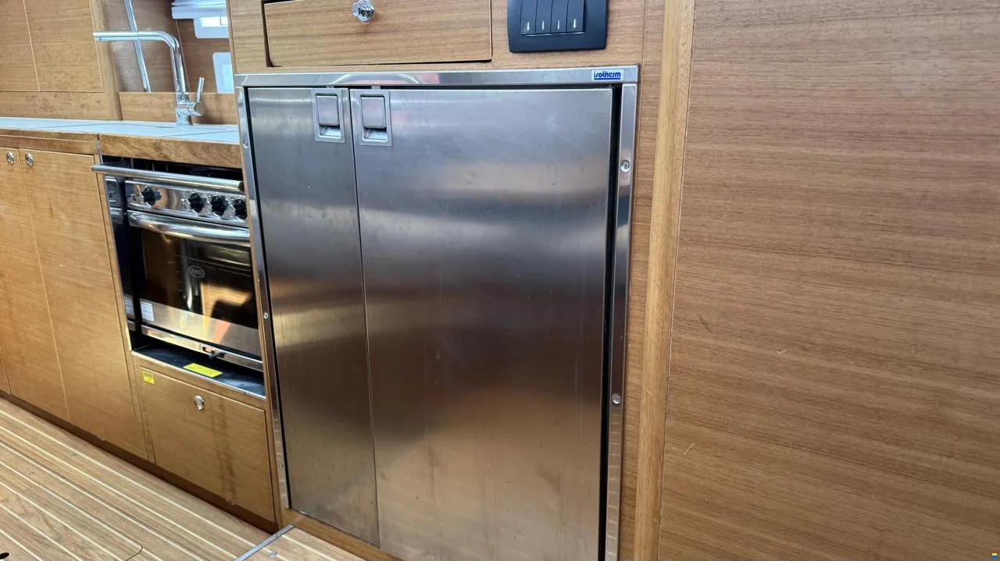

Пружинка-убийца: как спасти дверцы холодильника на Elan 45.1 Impression
Практическая заметка о ремонте подпружиненного замка Isotherm. Пошаговый разбор причин поломки, подбор аналогов пружин и перевод на неодимовые магнитные защелки для чартерных условий.
⚓️ Анатомия предательства: почему умирает пружинка
Это техническая заметка для всех владельцев и шкиперов, кто внезапно столкнулся с «апокалипсисом» на камбузе во время крена. Замок вертикального судового холодильника на Elan (чаще всего это Isotherm, но дефект актуален и для Vitrifrigo/Dometic) представляет собой простейший подпружиненный язычок.
Внутренняя пружина работает на кручение. К сожалению, производитель использует обычную сталь, которая находится в агрессивной влажной среде камбуза. Через 2-3 сезона точечная коррозия полностью убивает металл в самом нагруженном месте, пружина лопается, и дверца перестает фиксироваться. При крене в 20-25 градусов всё содержимое холодильника мгновенно летит на пол салона.

📊 Запасные части: что искать и сколько это стоит
Оригинальные замки по каталогам дилеров продаются исключительно в сборе, верфь не поставляет копеечные внутренние пружины отдельно. Вот сводка актуальных парт-номеров деталей в сборе:
| Верфь / Бренд | Номер детали / Описание | Ориентировочная цена |
|---|---|---|
| Isotherm | SGD00012AA (Нержавеющая сталь, универсальный) | ~$39 (около 3 500 ₽) |
| Isotherm | SGF00022AA (Lock Kit для моделей серии TB) | ~€20 (около 2 000 ₽) |
| Isotherm | SGD00008AA (Классический черный пластиковый) | ~¥145 (около 1 800 ₽) |
| Dometic | 385311619 (Замок в сборе, премиум серия) | ~$244 (около 22 000 ₽) |
| Dometic | 293 16 00-02/3 (Ручка-защелка в сборе) | ~$35 (около 3 100 ₽) |
🛠️ Решения: от экстренного до капитального
1. «Скорая помощь» посреди круиза:
Если пружина лопнула в море, а на борту нет ремкомплекта, используйте блокировку плоской текстильной стропой шириной 20–25 мм с защелкой-фастексом. Один конец стропы крепится коротким саморезом к деревянному торцу мебельного модуля камбуза, ответная часть — к рамке дверцы. На время переходов фастекс застегивается намертво. В крайнем случае выручит армированный скотч, наклеенный в три полосы поперек стыка дверцы.
2. Технический лайфхак: замена внутренней пружины:
Чтобы не платить за замену ручки целиком, замок можно разобрать, аккуратно высверлив пластиковые заглушки штифтов. Донором идеальной нержавеющей пружины может стать обычная авторучка или кремниевая зажигалка (потребуется лишь подрезать длину и подогнуть концы тонкими круглогубцами). Также на маркетплейсах продаются универсальные наборы пружин кручения из нержавеющей стали марки 304 (наборы по 200–240 штук разных диаметров). При сборке обязательно набейте полость замка водостойкой консистентной смазкой.
3. Модернизация: Переход на магнитные защелки:
Для чартерной эксплуатации лучший путь — полностью избавиться от механического язычка. Старый изношенный механизм демонтируется, а вместо него врезаются мощные неодимовые мебельные магниты в защитных обоймах из нержавеющей стали (например, сверхстойкие магнитные защелки на 10 фунтов удержания из стали марки 204). Магнитный прижим не изнашивается от времени и надежно удерживает массивную дверь с продуктами на любом крене. Чтобы дверь не стучала, на стык наклеивается микро-упор из мягкой резины.
💎 Вывод и ремнабор
Копеечная сломанная деталь замка Isotherm в море способна обернуться разбитыми продуктами и сорванным ужином команды. Для спокойной работы двух систершипов Elan мы держим на базе минимальный комплект: универсальный набор нержавеющих пружин, пару текстильных строп с фастексами для штормовой подстраховки и комплект неодимовых магнитов морской серии. Техника в чартере должна прощать ошибки и обладать запасом прочности.